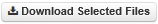

Store.Synchrotron Quick Reference Guide¶
Accessing Store.Synchrotron¶
Store.Synchrotron (MyTardis) can be accessed by visiting https://store.synchrotron.org.au with any web browser, clicking on the login link and entering your Australian Synchrotron (VBL) credentials.
Browsing and Sharing Experiments¶
Store.Synchrotron organises data by EPN (Experiment Proposal Number, ie. beam time from a proposal). This entry is called an ‘Experiment’ in the system, and each Experiment contains many datasets collected under an EPN. Each dataset gives users the ability to browse and download captured diffraction images.
Clicking on the name of an Experiment (EPN) will load a new page which displays descriptive information pertaining to the Experiment as well a list of its datasets. There are two tabs on the left: Description and Metadata.
{kind=link}
The number of datasets and files within an Experiment, as well as the total size, date uploaded and access rights are displayed near the top of the page.

Data sharing is facilitated through the VBL Storage Gateway.
Description
The Description tab is loaded by default whenever an
Experiment is accessed through the interface and displays detailed information
about the Experiment. The information provided may include the institution
that ran the Experiment, the licensing arrangement that governs it, as well as
the Experiment’s administrator(s). More information (if any has been provided)
about the Experiment can be accessed by clicking on the
button. The Description tab also allows an Experiment’s datasets to be
downloaded in their entirety as a single archive by clicking on the  button.
button.
Metadata
The Metadata tab displays detailed metadata information about an Experiment, which includes Beamline and EPN.

Accessing and Downloading Datasets¶
The names of accessible datasets are listed in the right-most pane displayed in the Experiment page. Datasets containing files can be accessed by clicking on the name of the relevant dataset. The number of individual files within each dataset and the total size of the dataset are displayed to the right of each entry.
Clicking on the checkbox ( ) to the left of a dataset will select it
and allow the data to be downloaded by clicking on the
) to the left of a dataset will select it
and allow the data to be downloaded by clicking on the  button. The text box above the dataset list can be used to filter datasets by
title.
button. The text box above the dataset list can be used to filter datasets by
title.
Downloading Datasets
Datasets can be viewed by clicking on their title in the Experiment page. The files in a dataset will be displayed on the right-hand side of the page and descriptive metadata will be displayed on the left. Three previews of diffraction images will be displayed on the left with the first, the last and the middle images shown. Clicking on a preview image will display the image at a larger resolution.

The files in a dataset can be viewed in the browser, with 100 files for each page appearing by default. They can be downloaded either as a single archive (via ) or individually (via the button next to each file). Clicking on the checkbox to the left of a file will select it and allow the data to be downloaded by clicking on the  button. The text box above the file list can be used to filter files by name. Clicking on the  button will display details about the image including any metadata. Large preview images for files can be selected and viewed by clicking on the small thumbnail of the relevant image under each file.
button will display details about the image including any metadata. Large preview images for files can be selected and viewed by clicking on the small thumbnail of the relevant image under each file.